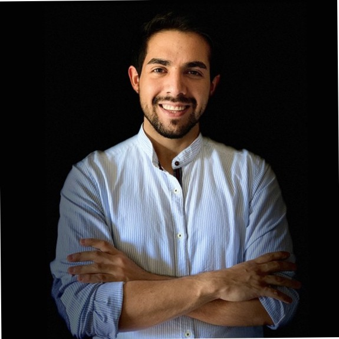

Juan Carlos Vergara
Ingeniero Comercial e Ingeniero en Diseño | Magíster en Innovación y Diseño
Experiencia laboral en Ecommerce, Marketing digital y Diseño, abarcando áreas de estrategia, gestión de proyectos y desarrollo de software; particularmente en la gestión de negocios en fase inicial y emprendimientos digitales. Me destaco por un fuerte liderazgo y compromiso con los equipos de trabajo, demostrando proactividad y adaptabilidad en diversos contextos. Mis intereses laborales se orientan hacia las innovaciones en marketing digital, el desarrollo de soluciones tecnológicas innovadoras y la optimización de estrategias de negocio.
EXPERIENCIA LABORAL
-
VentiPay | SDR (Marzo 2024- Actualidad)
- Atracción nuevos clientes.
- Automatización de los procesos.
- Gestión de onboarding con clientes.
-
Suver | Founder (Junio 2020- Actualidad)
- Análisis del entorno b2b.
- Creación de PMV.
- Diseño UX/UI.
- Desarrollo de Software.
- Estrategias de alianzas.
- Creación página web www.suver.cl
- Gestión de E-commerce.
- Automatización de los procesos.
-
KinesicWork | Práctica Profesional Ingeniero (Sept. 2023- Ene. 2024)
- Investigación de mercado.
- Creación de contenido para tendencias.
- Levantamiento de campañas Google Ads.
- Creación página web www.kinesicwork.cl
FORMACIÓN ACADÉMICA
- Universidad Adolfo Ibáñez | Magíster de Innovación y Diseño 2023
- Universidad Adolfo Ibáñez | Ingeniería en Diseño 2019 - 2022
- Universidad Adolfo Ibáñez | Ingeniería Comercial 2018 - 2022
- Universidad Mayor | Ingeniería Comercial 2016 - 2017
- Colegio Mayor | Educación Básica y Media 2003 - 2015
CURSOS Y CONOCIMIENTOS TÉCNICOS
- Formación Avanzada en SEO y Monetización - BIGSEO, 2021
- Google Ads Básico - Academia Metrics, 2020
- Facebook Ads Básico - Academia Metrics, 2020
- Importaciones a Chile desde 0 - LuchitoDelViento, 2020
- Bootcamp de Desarrollo Full-Stack - Desafío Latam, 2017
- Idiomas: inglés, nivel intermedio B2. EF Education, 2014
INFORMACIÓN ADICIONAL
- RUT: 19.672.658-6
- Fecha de Nacimiento: 12/09/1997
- Nacionalidad: Chileno
- Actividades extraprogramáticas: Entrenamientos diarios de running
- Otras áreas de interés: Programación, innovación, tecnología, robótica, negocios